产品中心
加厚斩骨刀 · 斩切两用
本站主推加厚斩骨刀，5mm 加厚刀背、不锈钢锻打刀身，砍骨不崩口。所有规格与实时价格请以群接龙页面为准。
主推爆款


本站主推加厚斩骨刀，5mm 加厚刀背、不锈钢锻打刀身，砍骨不崩口。所有规格与实时价格请以群接龙页面为准。
砍骨、切片实物演示，直观感受 5mm 加厚刀身的实力。
视频约 7MB，点击播放按钮后开始加载，不占用页面打开速度。
从锻打锤纹到手磨开刃，从宽厚刀背到黄金弧度刀刃，点击图片可查看大图。
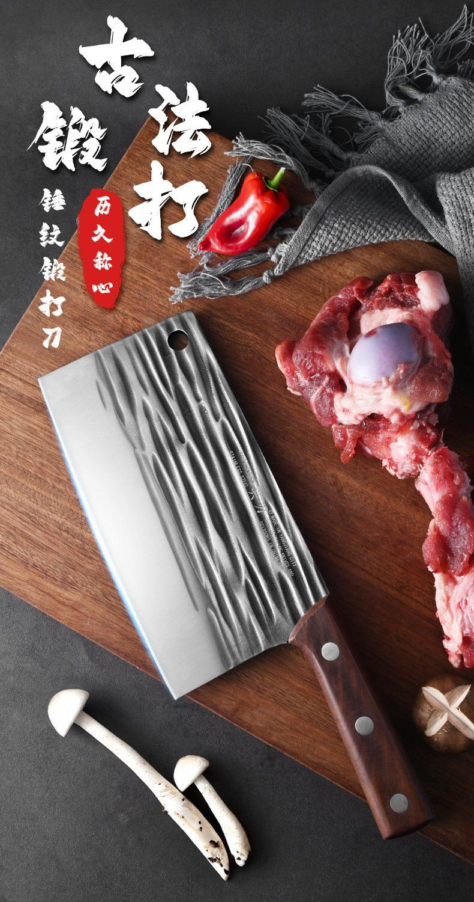
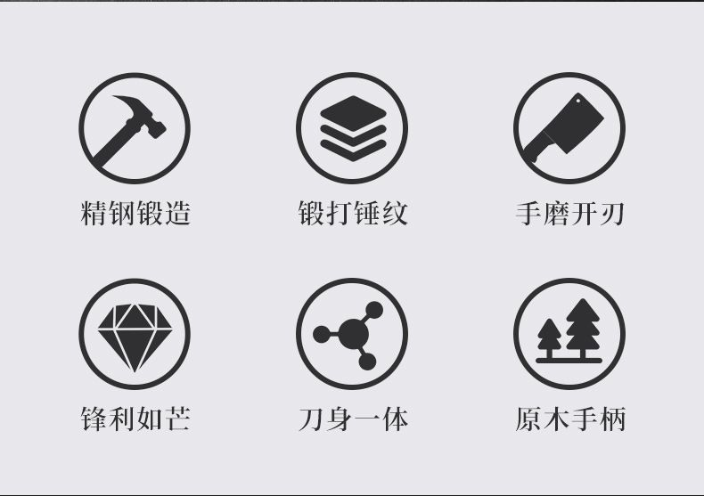
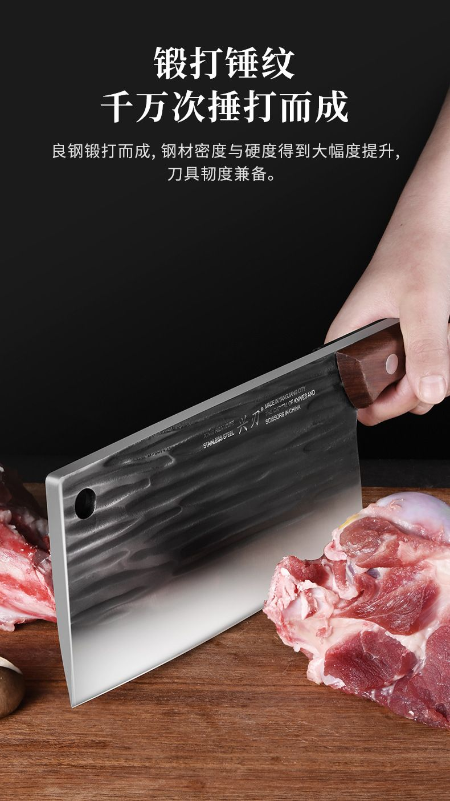
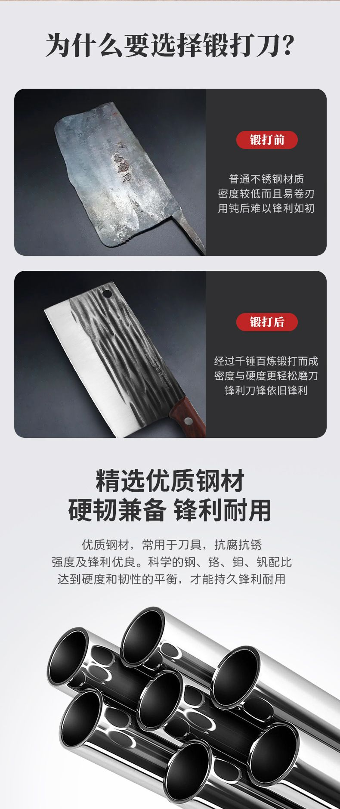
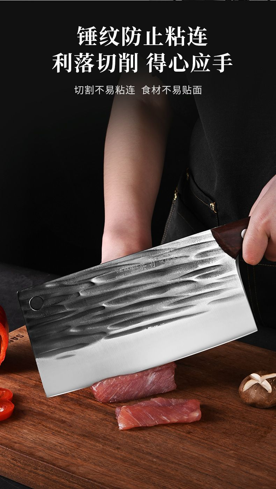
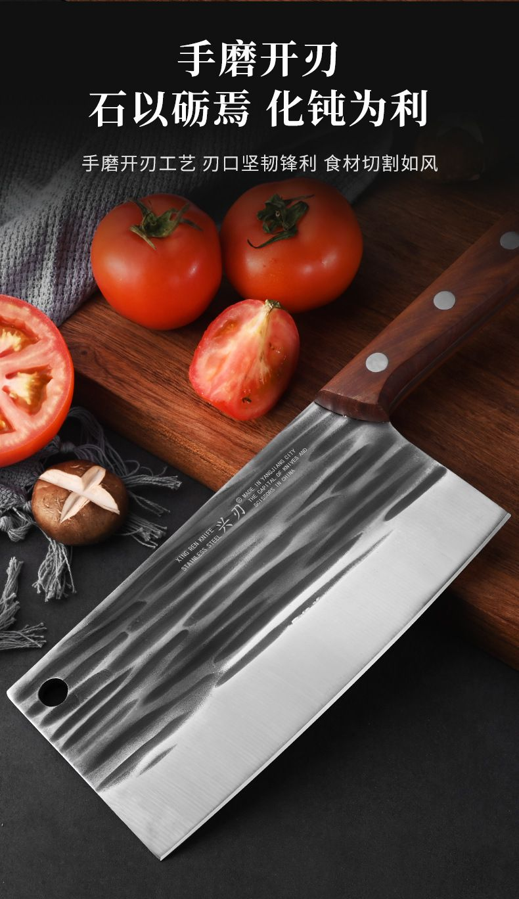
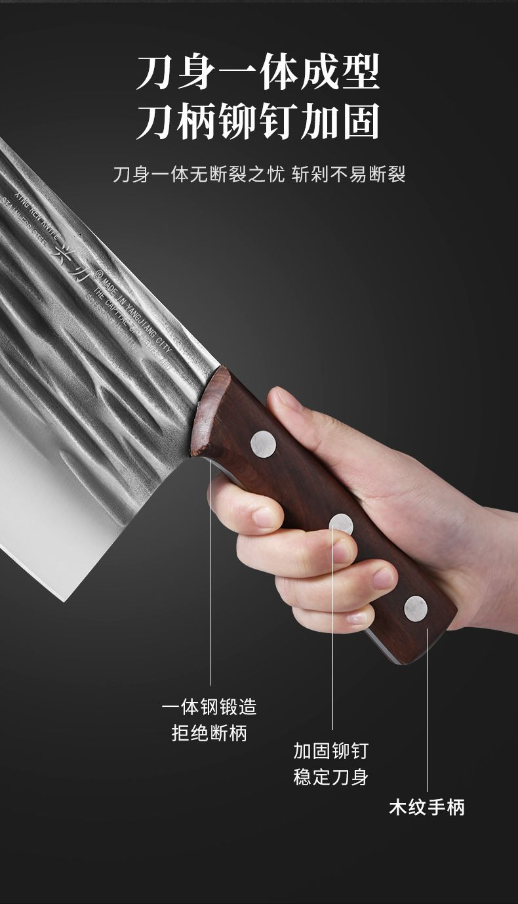
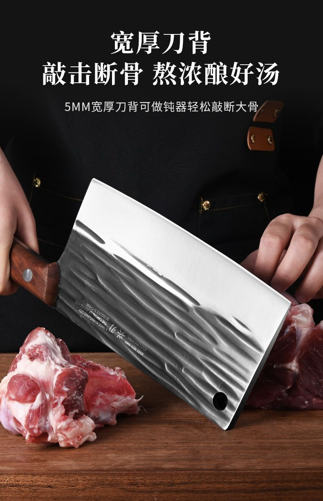
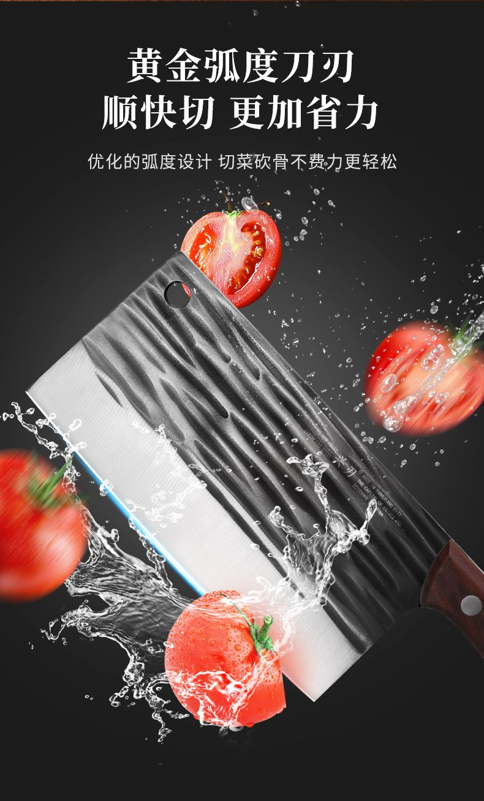
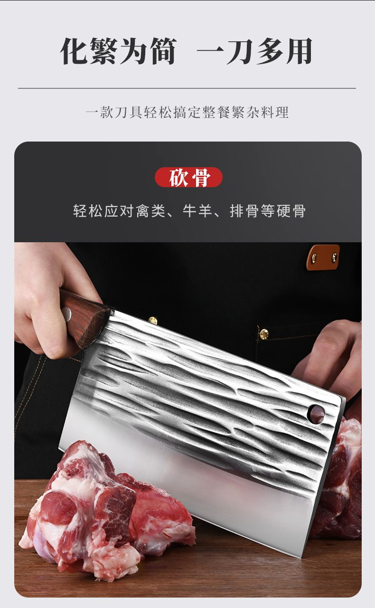
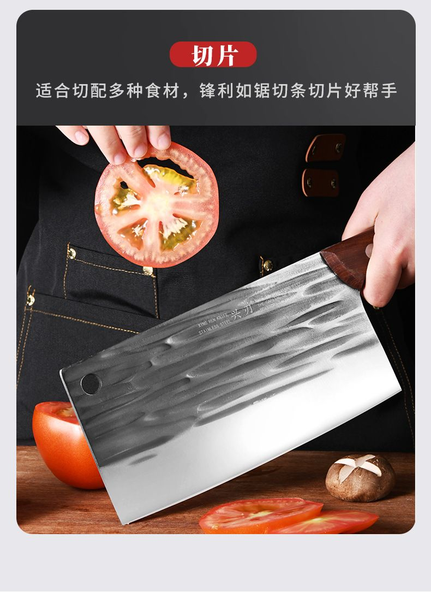
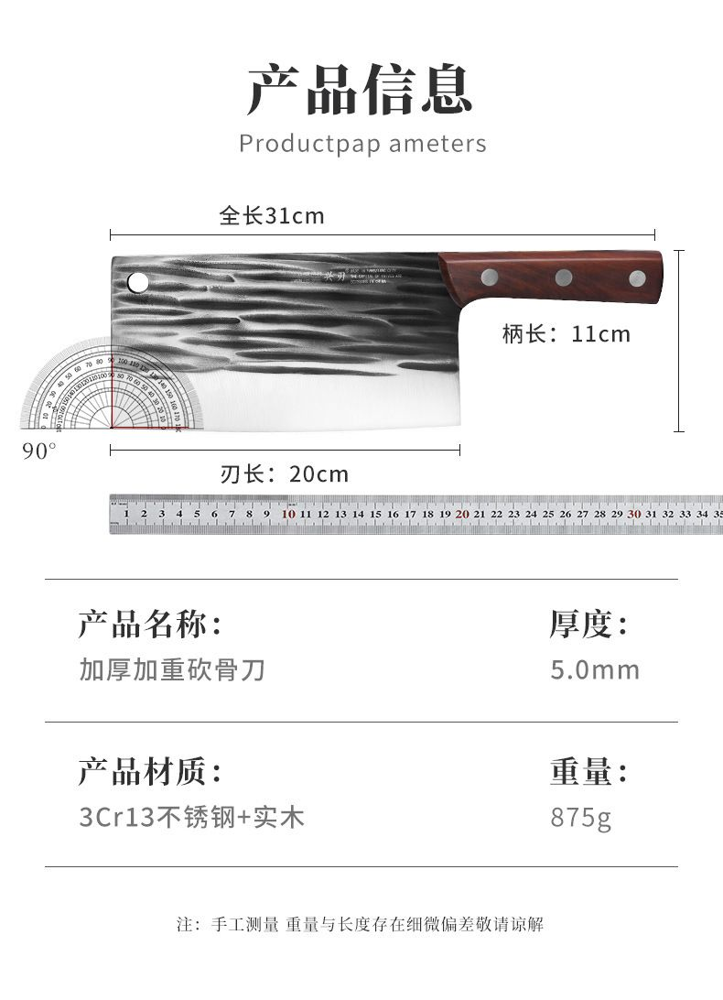